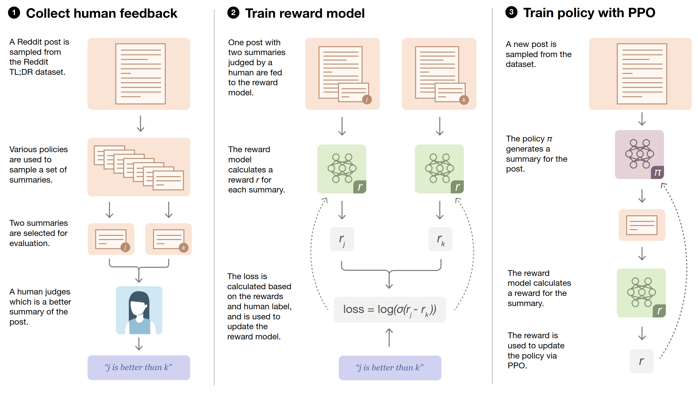

Learning to summarize from human feedback
"Step 0" of scalable oversight is applying RLHF to LLMs. See here for a discussion of whether this project was good or bad for the world.
I work on agent foundations, the mathematical theory of knowing and choosing. The goal is a good future where artificial intelligences are aligned and cooperative with humans. My current work is in open-source game theory, applying tools from topology and domain theory.
Previously I helped work on alignment of large language models at OpenAI. Before that I did a PhD in algebraic topology.

"Step 0" of scalable oversight is applying RLHF to LLMs. See here for a discussion of whether this project was good or bad for the world.